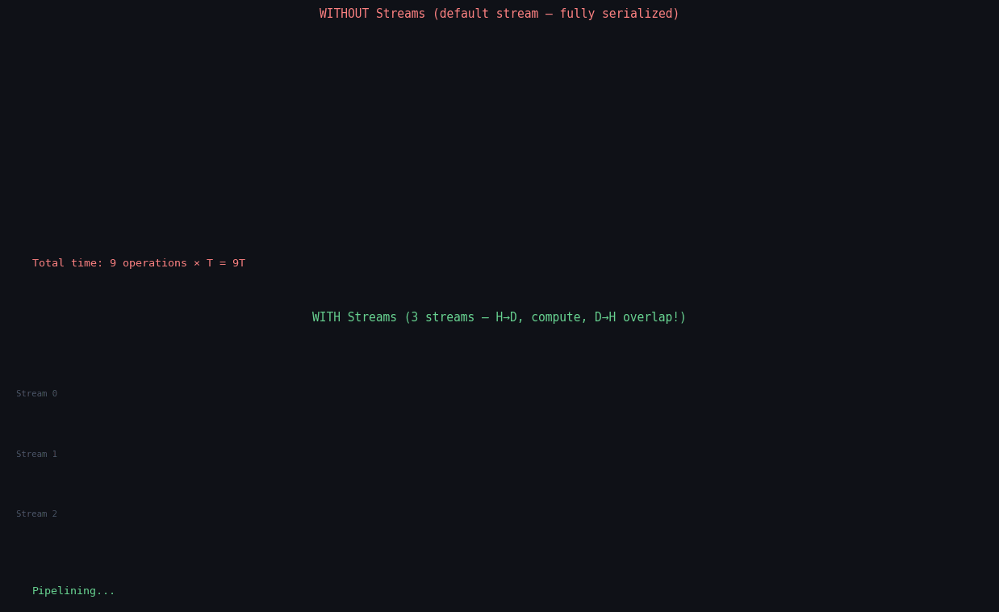

The GPU has three separate hardware engines that can all run simultaneously: a copy engine for host-to-device transfers, a copy engine for device-to-host transfers, and the compute engine. When you use the default stream, only one of these runs at a time. CUDA streams let you use all three in parallel — often a 2–3× speedup with zero algorithmic change.

Default stream (top): H→D copy, kernel, D→H copy run strictly sequentially. Multi-stream pipeline (bottom): while chunk N's kernel runs, copy chunk N+1 from host and copy chunk N-1 results back — all three engines run simultaneously. Total time shrinks to the compute-bound limit.
In this post
The Default Stream and Why It Serializes
Every CUDA operation you perform without specifying a stream goes into the default stream (stream 0). Operations in the default stream execute in order, and the default stream also implicitly synchronizes with all other streams — it is a global serialization barrier.
// Default stream: everything serialized, PCIe and compute engines never overlap
cudaMemcpy(d_A, h_A, bytes, cudaMemcpyHostToDevice); // blocks CPU until DMA done
kernel<<<grid, block>>>(d_A, d_B, N); // waits for copy to finish
cudaMemcpy(h_B, d_B, bytes, cudaMemcpyDeviceToHost); // waits for kernel to finish
// Timeline (time flows right):
// [=======H2D=======][======KERNEL======][=======D2H=======]
//
// Total: T_H2D + T_kernel + T_D2H
// For 1GB data: ~40ms + ~20ms + ~40ms = 100ms sequential(2) One D→H PCIe copy engine — transfers data from GPU VRAM to host RAM.
(3) Compute — kernels running on SMs.
All three run on entirely separate hardware. Streams are the software mechanism that tells the GPU driver which operations can run concurrently.
Creating and Using Streams
// Create streams
cudaStream_t stream1, stream2, stream3;
cudaStreamCreate(&stream1);
cudaStreamCreate(&stream2);
cudaStreamCreate(&stream3);
// Assign operations to streams:
// - cudaMemcpyAsync: 4th argument is the stream
// - kernel launch: 4th argument in <<<grid, block, smem, stream>>>
cudaMemcpyAsync(d_A, h_A, bytes, cudaMemcpyHostToDevice, stream1);
kernel<<<grid, block, 0, stream1>>>(d_A, d_result, N);
cudaMemcpyAsync(h_result, d_result, bytes, cudaMemcpyDeviceToHost, stream1);
// Different work in stream2: runs concurrently with stream1's operations
cudaMemcpyAsync(d_B, h_B, bytes, cudaMemcpyHostToDevice, stream2);
kernel2<<<grid, block, 0, stream2>>>(d_B, d_result2, N);
// Wait for everything:
cudaDeviceSynchronize(); // CPU blocks until all streams complete
// Or wait for just one stream:
cudaStreamSynchronize(stream1);
// Always destroy streams when done
cudaStreamDestroy(stream1);
cudaStreamDestroy(stream2);
cudaStreamDestroy(stream3);Stream Ordering Guarantees
This is the most important thing to understand about streams. The guarantee is simple but easy to get wrong:
copy → kernel → copy in stream1, they run in that exact order.
The kernel is guaranteed not to start until the first copy finishes.
Rule 2 — Inter-stream concurrency (no guarantees): Operations in different streams may run in any order relative to each other, or simultaneously. The GPU scheduler decides based on resource availability. You cannot assume stream2's kernel starts before stream1's kernel, or vice versa.
Rule 3 — Dependencies require explicit synchronization: If stream2's kernel needs data produced by stream1's kernel, you must use a CUDA event to enforce that ordering. Stream isolation does not imply isolation from data dependency bugs.
Pinned Memory — Required for Async Copies
Normal malloc() memory is pageable — the OS can move it
in physical RAM or even swap it to disk. The GPU's DMA engine transfers data directly
between physical memory addresses. If the host buffer is pageable, those physical
addresses might change at any moment — the DMA would read garbage.
What CUDA does with pageable memory in cudaMemcpyAsync: It silently stages the data through an internal pinned buffer, then does the DMA. This forces a synchronous copy under the hood — your "async" call blocks until the staging is done. The overlap never happens.
What you need to do: Allocate host memory with cudaMallocHost(),
which allocates page-locked (pinned) memory. The OS guarantees it stays at fixed
physical addresses, so the DMA can proceed truly asynchronously.
// WRONG: regular malloc -- async copy will silently be synchronous
float* h_data = (float*)malloc(N * sizeof(float));
cudaMemcpyAsync(d_data, h_data, N * sizeof(float), cudaMemcpyHostToDevice, stream1);
// This looks async but is actually synchronous! CPU blocks here.
// CORRECT: pinned memory -- async copy is truly asynchronous
float* h_data;
cudaMallocHost(&h_data, N * sizeof(float)); // page-locked allocation
// OR equivalently:
// cudaHostAlloc(&h_data, N * sizeof(float), cudaHostAllocDefault);
// Now this returns immediately -- DMA runs in background
cudaMemcpyAsync(d_data, h_data, N * sizeof(float), cudaMemcpyHostToDevice, stream1);
// CPU is free to do other work (queue more operations, launch other streams, etc.)
// Free pinned memory with cudaFreeHost (NOT free())
cudaFreeHost(h_data);Pinned memory bandwidth comparison:
The Double-Buffer Pipeline Pattern
The classic streams use case: processing a large array in chunks, overlapping the copy of chunk N+1 with the computation of chunk N, and the copy-back of chunk N-1 — all simultaneously.
void processWithStreams(float* h_input, float* h_output, int N, int chunkSize) {
// Allocate 2 sets of pinned host + device buffers (double-buffering)
float* h_in[2], *h_out[2];
float* d_in[2], *d_out[2];
for (int b = 0; b < 2; b++) {
cudaMallocHost(&h_in[b], chunkSize * sizeof(float));
cudaMallocHost(&h_out[b], chunkSize * sizeof(float));
cudaMalloc(&d_in[b], chunkSize * sizeof(float));
cudaMalloc(&d_out[b], chunkSize * sizeof(float));
}
cudaStream_t streams[2];
cudaStreamCreate(&streams[0]);
cudaStreamCreate(&streams[1]);
int nChunks = (N + chunkSize - 1) / chunkSize;
dim3 block(256);
dim3 grid((chunkSize + 255) / 256);
for (int chunk = 0; chunk < nChunks; chunk++) {
int s = chunk % 2; // alternate between buffer 0 and 1
int offset = chunk * chunkSize;
int thisChunk = min(chunkSize, N - offset);
// CPU: copy this chunk's data into the pinned buffer for this stream
memcpy(h_in[s], h_input + offset, thisChunk * sizeof(float));
// GPU stream s: H->D copy, then kernel, then D->H copy (ordered within stream)
cudaMemcpyAsync(d_in[s], h_in[s], thisChunk * sizeof(float),
cudaMemcpyHostToDevice, streams[s]);
processKernel<<<grid, block, 0, streams[s]>>>(d_in[s], d_out[s], thisChunk);
cudaMemcpyAsync(h_out[s], d_out[s], thisChunk * sizeof(float),
cudaMemcpyDeviceToHost, streams[s]);
// Once stream s has processed at least 2 chunks (so the OTHER buffer has results),
// wait for the previous use of THIS stream and copy results to output
if (chunk >= 2) {
cudaStreamSynchronize(streams[s]);
int prevOffset = (chunk - 2) * chunkSize;
int prevChunk = min(chunkSize, N - prevOffset);
memcpy(h_output + prevOffset, h_out[s], prevChunk * sizeof(float));
}
}
// Flush both streams
for (int s = 0; s < 2; s++) cudaStreamSynchronize(streams[s]);
// Cleanup
for (int b = 0; b < 2; b++) {
cudaFreeHost(h_in[b]); cudaFreeHost(h_out[b]);
cudaFree(d_in[b]); cudaFree(d_out[b]);
}
cudaStreamDestroy(streams[0]);
cudaStreamDestroy(streams[1]);
}Let me walk through what happens in the first 4 iterations:
CUDA Events — Timing and Synchronization
A CUDA event is a timestamp that gets recorded into a stream. When the GPU reaches that point in the stream, it writes the current GPU clock to the event. You can then ask how much time elapsed between two events, or use one event to block another stream from proceeding.
// Timing with CUDA events (the only accurate way to time GPU operations)
cudaEvent_t start, stop;
cudaEventCreate(&start);
cudaEventCreate(&stop);
cudaEventRecord(start, 0); // record "start" at this point in stream 0
myKernel<<<grid, block>>>(d_A, d_B, N);
cudaEventRecord(stop, 0); // record "stop" after kernel
cudaEventSynchronize(stop); // CPU waits until "stop" is recorded on GPU
float ms;
cudaEventElapsedTime(&ms, start, stop); // elapsed time between the two events
printf("Kernel time: %.3f ms\n", ms);
printf("Bandwidth: %.2f GB/s\n",
(2.0 * N * sizeof(float)) / (ms * 1e-3) / 1e9); // 2*N = read + write
cudaEventDestroy(start);
cudaEventDestroy(stop);// Cross-stream dependency with events:
// kernel1 produces d_B, kernel2 consumes d_B -- must enforce ordering
cudaEvent_t dep;
cudaEventCreate(&dep);
kernel1<<<grid, block, 0, stream1>>>(d_A, d_B, N);
cudaEventRecord(dep, stream1); // "dep" fires when stream1 reaches this point
// stream2 will not start kernel2 until "dep" is recorded
// (i.e., until kernel1 in stream1 has completed)
// The CPU does NOT block here -- it is the GPU stream that waits
cudaStreamWaitEvent(stream2, dep, 0);
kernel2<<<grid, block, 0, stream2>>>(d_B, d_C, N); // safe to read d_B here
cudaEventDestroy(dep);Stream Synchronization Methods
| Method | What it waits for | Who waits | When to use |
|---|---|---|---|
| cudaDeviceSynchronize() | ALL operations on ALL streams | CPU blocks | End of program, or before measuring elapsed time |
| cudaStreamSynchronize(s) | All operations queued in stream s | CPU blocks | When you need results from one stream before proceeding on CPU |
| cudaEventSynchronize(e) | Event e to be recorded on GPU | CPU blocks | Fine-grained timing; waiting for a specific point in one stream |
| cudaStreamWaitEvent(s, e) | GPU stream s waits for event e | GPU stream waits; CPU continues | Cross-stream data dependencies (preferred for pipelines) |
| cudaStreamQuery(s) | Non-blocking: returns cudaSuccess if done | CPU polls; no block | Checking completion without stalling (e.g., work-stealing loop) |
cudaStreamSynchronize blocks the CPU thread, preventing you from queuing
more work. cudaStreamWaitEvent lets the CPU continue queuing work while
the GPU enforces the ordering internally. Your pipeline queue stays full, maximizing
GPU utilization.
Concurrent Kernel Execution
Multiple kernels can run simultaneously on the GPU if they are in different non-default streams and the GPU has resources available for both. This is most useful when individual kernels are small (do not fill all 108 SMs on an A100) — you can keep all SMs busy by running multiple kernels.
cudaStream_t s1, s2;
cudaStreamCreate(&s1);
cudaStreamCreate(&s2);
// These two kernels launch almost simultaneously and run concurrently:
// smallKernel uses 16 SMs, largeKernel uses 80 SMs -- together: 96 of 108 on A100
smallKernel<<<16, 256, 0, s1>>>(d_A, N); // uses ~16 SMs
largeKernel<<<80, 256, 0, s2>>>(d_B, M); // uses ~80 SMs
// Both run in parallel; total SM occupancy = 96/108 = 89%
cudaStreamSynchronize(s1);
cudaStreamSynchronize(s2);
cudaStreamDestroy(s1);
cudaStreamDestroy(s2);prop.concurrentKernels == 1.
All modern NVIDIA GPUs from Fermi onward support this.
Stream Priorities
Stream priorities control which stream's operations the GPU scheduler prefers when multiple streams have ready work. Higher-priority streams preempt lower-priority streams (on Pascal+ with compute preemption).
// Query the range of priority values available on this GPU
// Lower number = higher priority (counterintuitive but that's the API)
int leastPriority, greatestPriority;
cudaDeviceGetStreamPriorityRange(&leastPriority, &greatestPriority);
// Typically: leastPriority = 0, greatestPriority = -1
// Create a high-priority stream for latency-sensitive work
// and a low-priority stream for background batch processing
cudaStream_t highPri, lowPri;
cudaStreamCreateWithPriority(&highPri, cudaStreamNonBlocking, greatestPriority); // -1
cudaStreamCreateWithPriority(&lowPri, cudaStreamNonBlocking, leastPriority); // 0
// Launch long background batch job in low-priority stream
batchKernel<<<huge_grid, 256, 0, lowPri>>>(d_batch, N);
// Later: urgent inference request arrives, needs immediate GPU time
// On Pascal+, this can preempt the low-priority kernel at a safe boundary
urgentKernel<<<small_grid, 256, 0, highPri>>>(d_query, M);
// highPri kernel runs with lower latency; lowPri resumes afterPriority is a hint, not a guarantee. The scheduler may still run both at low utilization. Use priorities when you have a latency-sensitive workload (e.g., real-time inference) running alongside a throughput-sensitive workload (e.g., training preprocessing) and need the former to take precedence.